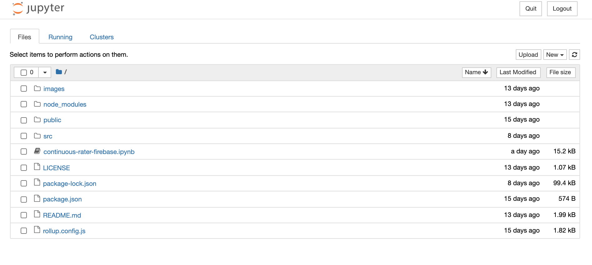
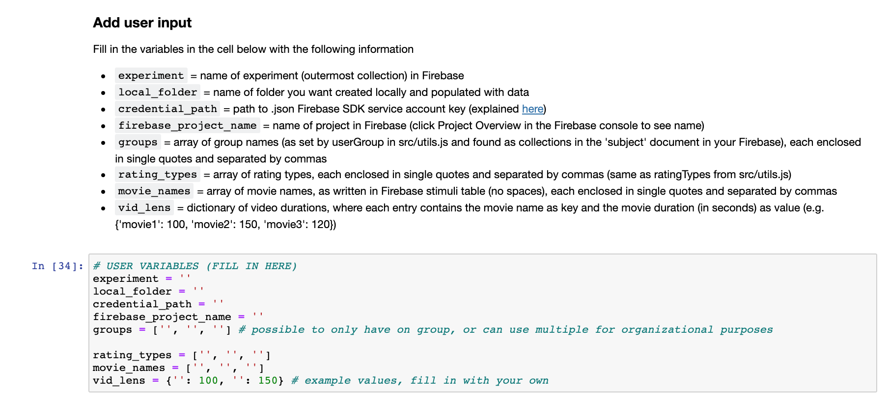

Pulling data from firebase¶
Included in the github repo is a jupyter notebook file, continuous-rater-firebase.ipynb. This contains python code pre-structured to help grab collected data from Firebase, download it locally, and wrangle it into various formats for analysis.
If you execute all cells in the notebook, you will obtain a long-format file of all subject ratings containing all relevant information.
Note
This notebook removes subjects who started (but did not complete) the task. It still records them in a separate folder (called Incomplete within the Subjects folder), but does not include their ratings in the file long-format file.
Getting started with jupyter notebooks¶
If you have never used a jupyter notebook (a mix of interactive code and markdown cells) before, and don’t have the necessary software installed, I recommend downloading Anaconda. Once fully installed, go to your command line and cd into the continuous-rater repository. Then, run the following line of code:
jupyter notebook
This should open a GUI using a local host in your default browser and look something like this:

Click and open the continuous-rater-firebase.ipynb file.
Using the included jupyter notebook¶
The included notebook contains cells of python code, labeled by function. In order to execute a cell, you can click on it and then press shift + enter. The cells should be run in order to ensure all necessary variables are instantiated properly.
You should see a section of the notebook that looks like this:

Similar to the src/utils.js file, this notebook contains some variables that require user input. Please read the markdown description of each variable carefully and fill in accordingly.
Some notes:
local_folder: this folder does not need to already exist. The notebook will create it for you, add it to yourcontinuous-raterrepo (unless you change the path to have it created elsewhere), and populate it with the necessary sub-folders and files. Add this folder to your.gitignoreto ensure you don’t upload confidential subject data to github. The data files can also be quite largecredential_path: finding/generating your Firebase SDK credentials is described below
Setting up Firebase Admin SDK credentials¶
First, you must install the Firebase Admin SDK. From a command line, run:
pip install firebase-admin
Next, you need to initialize the SDK for your project. Here are the steps to do so, taken from Google’s tutorial (found here):
In the Firebase console, open Project settings and then navigate to the Service accounts tab
Click Generate new private key, then confirm by clicking Generate key
Save this .json file somewhere secure outside of your
continuous-raterrepository (to ensure it is not accidentally uploaded to git)Set the
credential_pathvariable in the jupyter notebook as the path to this .json file
Note
This jupyter notebook will not work properly unless all variables in the USER VARIABLES cell are filled in correctly. Please ensure accuracy and completeness.